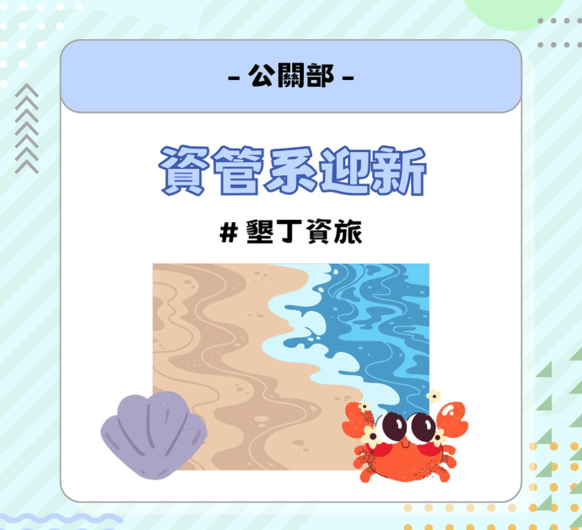
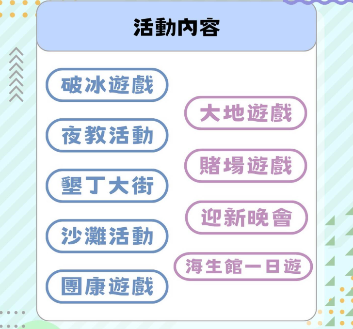

資管系迎新活動
🎉 歡迎加入高雄大學資訊管理學系！ 🎉
親愛的學弟妹們，歡迎來到 高雄大學資訊管理學系！很高興能在這裡見到大家，從今天開始，你們將展開一段充滿挑戰與成長的大學旅程。
在資管系，你將學習到資訊技術、管理知識與實務應用的結合，無論是程式設計、數據分析、系統開發，還是專案管理，這裡都有豐富的資源和師長的指導，幫助你們發展專業能力。
除了課業學習，我們還有熱情的學長姐和各式各樣的活動等著你參與，無論是迎新、社團、競賽或專題製作，都能讓你拓展人脈、累積經驗。這裡不只是學習的地方，更是一個溫暖的大家庭，希望大家能夠互相扶持、共同成長！
未來的四年，將會是充滿挑戰與回憶的一段旅程，希望你們能夠勇敢迎接新挑戰，善用資源，發揮潛能，為自己的未來開創無限可能！
再次歡迎加入高雄大學資訊管理學系，期待與你們一起創造美好回憶！💙💻
我們即將舉辦一場迎新宿營活動，對此活動感興趣的話，麻煩幫我點進下面的連結查看活動內容，以及填寫報名表單哦!，以及填寫報名表單哦!
- 📍地點：屏東墾丁
- 🗓️日期：4/24-4/25
- 💰費用：2500
以下為報名連結，大家要踴躍點進去報呦！
點這裡點這裡！！！

